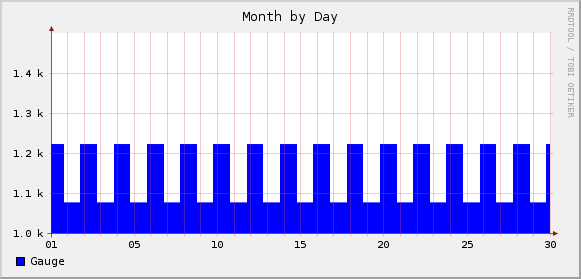

RRDtool Tips and Traps
G. Wade Johnson
What is RRDtool?
RRDtool manages one or more round robin databases of time
series data.
What is a Round Robin Database?

A fixed size ring of data positions makes up the database.
A round robin database is a systems for storing a fixed number of data points
covering a sliding window of time. The database does not grow over time. All
of the data positions are allocated initially. When we've used all the available
positions, old data is overwritten rather than new space being allocated.
What is Time Series Data?
Every piece of data is associated with a point in time.
RRDtool does not store data like a relational database. Every number
in the database is associated with a particular point in time. The
data has no meaning except in relation to this time.
Use Case: Tracking Router Data
Began as MRTG (Multi Router
Traffic Grapher)
Tobias Oetiker and Dave Rand originally wrote MRTG to generate graphs
of traffic flowing through network routers. The database portion of this
project is now RRDtool.
Use Case: Munin
Munin is a monitoring tool
for computer performance
Munin tracks and graphs performance of multiple computers. It can
track and graph:
- network performance
- CPU load, memory usage
- hard drive statistics
- DNS
- Jabber connections
- Email stats
- HTTP connections
- LDAP activity
- OpenVPN conections
- database connections
- and more
RRDtool Tips
Tips can be partitioned into three areas
Although the concept seems pretty straight-forward, there are several things
that you need to think about the make the best use of RRDtool. These follow pretty
directly from the design, but may not be immediately obvious.
Time Tip: Input at Regular Times
Input at regular times gives more consistent results.
Because of the way that RRDtool stores data, the most consistent behavior
results from entering data at regular intervals on the time step. If you
are a little off time, the program interpolates the data from the time you
entered to the step time.
Time Tip: Timescales and Resolutions
Choose your resolution based on the timescales you might want to display.
The higher the resolution, the more space you will need to store the
data. It is hard to use high-resolution, long-term data. For example, how
likely are you to want to graph data from two years ago to a resolution of
5 minutes? High resolution is useful for recent data, lower resolutions
are good for longer term data.
RRDtool explicitly supports the ability to keep multiple timescales in
the same file. Choose the resolution for each timescale to be reasonable.
for that scale. RRDtool handles consolidating the data for the different
resolutions.
Data Tip: Consolidation Functions
Consolidation functions determine how the data is converted to other
timescales.
The consolidation function associated with each round robin archive in
the database determines what data is stored. Each consolidation function
summarizes the data in some way to reduce what is actually stored. This
involves a loss of information. Choosing the right consolidation function
can help preserve the features of the data that you are interested in.
Data Tip: Data Source Types
The Data Source Type determines how RRDtool interprets incoming data.
- GAUGE
- COUNTER
- DERIVE
- ABSOLUTE
- COMPUTE
GAUGE is as close as you can get to storing individual data points.
It's designed for tracking things like temperatures.
COUNTER is for continuously incrementing counters. The counter never
decreases, except for counter resets.
DERIVE stores the derivative of the data.
ABSOLUTE is for a counter that is reset on each read. Used for fast
counters that we want to have the largest potential change on each read.
COMPUTE is for storing the result of a formula applied to the other
data type.
Data Tip: Multiple Pieces of Data
A single RRD can contain multiple pieces of data, provided they are all
updated at the same time.
There are often circumstances where you are tracking multiple pieces
of information at once. If you can collect them together and update the
RRDtool at the same. This simplifies comparing related data.
Graph Tip: Transform Data as You Graph
Use CDEF
statements and RPN
to convert the data before graphing.
When specifying a graph, you can use CDEF statements to convert data
before graphing. The CDEF statement uses an RPN-based transformation
language to do the conversions.
Using this mechanism, you can graph data with some default value in
place of any unknown, or scale the graph by some amount. You can combine
multiple data sets to get the graph you need or any of a number of other
effects.
Graph Tip: Special Effects with CDEF
CDEF can be used to change the way data is
displayed.
CDEF statements can be used not only for recalculating data.
They can also be used to generate interesting graph effects. Some
of the graphs on the attache page a pretty straight-forward. Others
are generated by transforming and overlapping the datasets in various
ways.
Many of the effects are the results of shifting data up or down.
Multiplying by -1 generates a reflection of the data.
RRDtool Traps
Traps can be partitioned into three areas
One problem with RRDtool is that it does not actually act the way most
people tend to expect. It's functionality is completely reasonable within
the bounds of what it was designed to do: track time series rates in
multiple time scales.
Unfortunately, if you expect to be able to retrieve exactly the data
you put in, you will be surprised. Many of the problems that people
encounter are misunderstandings around this issue.
Time Trap: Data not at Step Time
Data entered off the step time is transformed to fit the step.
In order to track data in a finite space, all incoming data must be
transformed to fit the time steps that are expected to be stored. In
addition, the data is treated as a rate to track, so certain assumptions
can be made about how the data is transformed.
Time Trap: Heartbeat vs. Step Size
The heartbeat determines how many undefined values are tolerated.
The step size specifies how often data samples are saved.
If you don't have a value for a particular time stamp, RRDtool can
deal with it three ways:
- Set the value to zero (RRDtool never does this)
- Set the value to
UNDEFINED. (RRDtool does this if
we are missing heartbeat number of entries.
- Generate an average value based on the other entries in the
RRD. (RRDtool does this if we have few than
heartbeat
missing entries.
Only one data item is stored per step seconds. It doesn't
matter how many extra data points are entered.
Time Trap: Step Size vs. Entry Time
The times at which the data are stored is determined by the step size.

I know this seems obvious, but there is an implication that usually
trips people up when the start storing data at lower resolutions. The
entry time for each data point can be determined by epoch times that
are even multiples of the step size.
Most people are not to bothered by the fact that you can't take five
minute samples starting at 2 minutes after the hour. For resolutions up
through hourly, this definition works quite well.
However, at a step size of 1 day (86400 seconds), you might be
surprised to find that the day doesn't start where you thought it did.
As far as RRDtool is concerned the day starts at 00:00 hours UTC. If
you are in Houston, that means days are shifted 6 hours from where you
thought they were. This is really visible on a graph.
Data Trap: It's Always a Rate
All data is treated as time-series rates.
This is an artifact of the original use of RRDtool. Every data point
is associated with a point of time. All data is stored as a rate of
change of data. This has some interesting implications relating to
transforming the data you provided into the data RRDtool stores.
RRDtool only stores data at specific time steps, if you enter data
at a different time step. The program transforms the data into
equivalent data for the actual timestamp it stores. The
definition of equivalent is based on the fact that the data represents
a rate. As long as the rate is preserved, the transformed value is
considered equivalent.
Data Trap: Cannot Fill in Old Data
RRDtool only allows data entries after the last data point entered.
There is no way to go back and correct an old data point. There is
no way to go back and fill in a data point you missed at an earlier
time. This is not the same as a traditional relatioal database, each
time entry is done once.
This can really be a problem if you have multiple data points in the
database and one of those doesn't have data. There's no way to fill that
data point later.
Data Trap: Unknown Values
Unknown data values may have effects you aren't expecting.
As described above, it's important to remember that missing data points
either show up as UNDEFINED or get averaged away depending
on the heartbeat value and the number of undefined values.
This is a feature of the system, not a bug.
Undefined values are not graphed. You can use a CDEF statement to
transform them into another value, but undefined values do not get graphed
otherwise. They are ot automatically converted to zero.
Data Trap: Wrong Data Source Type
Different data types are appropriate for different data.
Choose the data source type wisely to get the best result. GAUGE is
the only data source type that approximates normal data. The others are
variations on the idea of a counter for streaming data. The reason for
this dates back to the original usage for tracking router data.
Choosing each of the other types depends on whether or not you are
sampling a counter, getting a new chunk of data, or tracking a value
that rises and falls, not just rises.
Graph Trap: Changes in Resolution
The farther back in time you look, the less resolution is needed.
One of the interesting features of RRDtool databases is the ability
to store the same data at different resolutions for different timescales.
RRDtool handles populating all of the timescales once you set it up
correctly.
For example, you might want to store recent data to a resolution of
five minutes so that you can query the data for today and yesterday at
high resolution. You may want to look at hourly data for each of the last
6 months. For the last 12 months, a daily resolution may be enough.
There is no need to store 5 minute samples from 3 years ago. Odds are
that no one is really going to care about the data transfer rate between
10:05 am and 10:10 am on February 7, 2005.
Graph Trap: Pixel Size Determines Resolution
The amount of data in one pixel-width of time determines the resolution.
If the resolution would result in a time-step smaller than a pixel, it
is not used. It is possible to override ths decision, but RRDtool defaults
to the smallest resolution that produces a time step at least one pixel
wide.

{kind=link}
{kind=link}
{kind=link}
{kind=link}